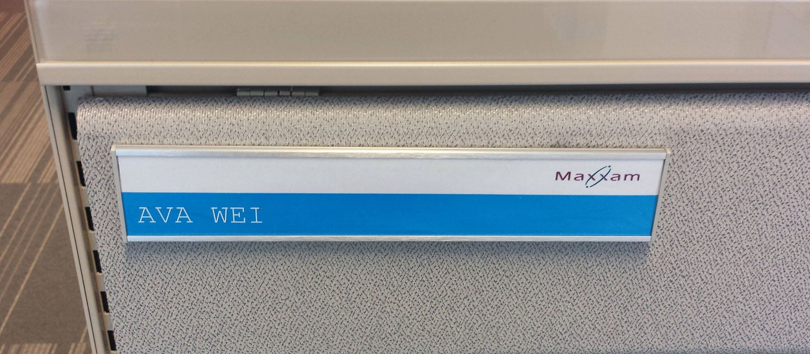

Work Experience
Accounts Payable Experience
 After four months of working as an Accounts Payable Intern, I was called by my supervisor to return for the following summer. I was glad to return as I enjoyed working in the Accounting department surrounded by kind and hardworking individuals. Here are some of the things I was responsible for at my job:
- Processed manual and purchase order invoices with strong accuracy
- Ensured invoices were properly coded and approved before sending out payment
- Prevented delays in payment by double checking all addresses, unsigned cheques, invoice numbers, and dollar amounts
- Reviewed for misapplied payments and other inconsistencies before mailing out cheques, while making sure of the correct stamps
- Provided timely updates to supervisor when performing assigned tasks
- Quickly and accurately performed data entry
- Checked and fixed discrepancies while entering invoices into Sage 300 ERP (AccPac)
- Efficiently matched invoices to 150+ cheques in one sitting
- Maintained files for 4 different company databases in both open payable cabinets and paid cabinets
Server/Cashier Experience
I held a job for two summers when I was in high school at an ice cream kiosk. As only one person worked at the kiosk at a time, I handled all tasks simultaneously and independently. I served ice cream, sold drinks, worked the cash register, and handled any deliveries of new stock. I was responsible for opening the kiosk and setting up, as well as closing at the end of each day after counting and balancing the sales money. Through this job, I learned how to work under pressure and multi-task. I also developed customer service experience and further enhanced my organizational skills.